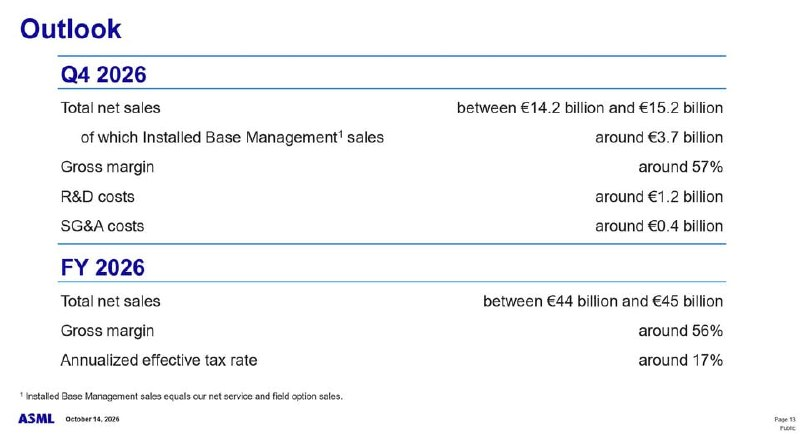
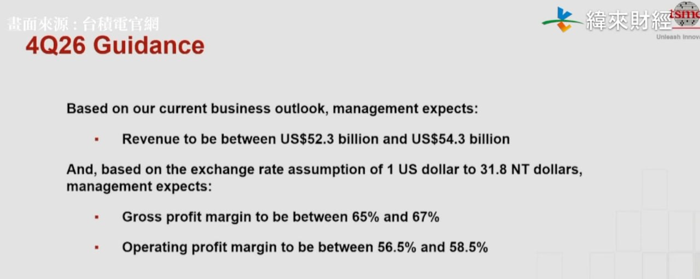

過去 26 小時共 3 則，全是實質內容、沒有業配：一則 ASML Q3 財報重點（附官方展望投影片），一則台積電法說會影片連結（附 4Q26 財測畫面）。兩家都是 10/14–10/15 公布。重點是 AI 帶動的晶圓廠擴產，已經讓設備商的產能排到 2028 年。
asml q3
看來連 asml 都明顯受到 cleanroom 的缺乏限制，這個環節是許多設備廠商開始刷成績的瓶頸
- Q3 營收 €11.7b 創高，毛利率 57.5% 高於指引
- Q4 guide 營收 €14.2 - 15.2bn、毛利率 57%。2026 FY 營收+36%、毛利率 56%，EUV +45%、非 EUV +20%、IBM +50%
- 公司預期 2027 memory 逼近，但 logic 仍略大一些
- 中國占全年 20%，2027 以後內需包含成熟 logic、記憶體仍強
- 目前規劃的 27/28 產出無法滿足客戶需求，且新增產能較容易落在 2028
- 漲價已談定，2027 反應在營收、ASP 與毛利率，2028 發酵
- 取消成本高於預付款，公司認為訂單沒有因為卡位而灌水
- Low-NA EUV 在 DRAM 出現新客戶，High-NA 也有類似趨勢
- Intel 累計 High-NA 曝光超過 1m 片，與 Low-NA 同層表現相當，Samsung 2028、TSMC 2030 進量產
- 與 TSMC 發起 12 吋光罩聯盟，2031 試產線、2033 量產

圖是 ASML 10/14 的財報展望投影片：Q4 營收 €14.2–15.2B（其中 Installed Base Management 約 €3.7B）、毛利率約 57%、研發約 €1.2B、SG&A 約 €0.4B；2026 全年營收 €44–45B、毛利率約 56%、有效稅率約 17%。
講解
數字部分都和官方新聞稿對得上：Q3 營收 €11.66B（接近指引上緣）、毛利率 57.5% 高於指引、淨利 €5.0B，Q3 賣出 113 台新機和 8 台二手機。「IBM +50%」不是指 IBM 公司，是 Installed Base Management，也就是已裝機台的維修、服務與升級。客戶機台越多、升級越頻繁，這塊就長得越快，毛利也比新機高，管理層說它是「重要的波動因子」。Q4 營收比 Q3 一口氣多 €2.5–3.5B，但毛利率反而從 57.5% 降到 57%，公司解釋是擴產的爬坡成本。
貼文開頭的判斷要打個折。依法說會逐字稿，CEO Fouquet 說得很明白：「我們不認為客戶的無塵室會是影響需求的主要因素」，只有一些「戰術性限制」可能讓個別機台的交期延後幾週，ASML 也會先確認客戶廠房進度再分配機台。CFO Dassen 則提醒，客戶 2027–28 年的建廠要「非常認真地執行」，才不會變成限制。所以無塵室比較像潛在風險，不是「已經明顯受限」。真正的瓶頸是 ASML 自己的產能：2027 年 Low-NA EUV 和 DUV 浸潤式產能計畫擴 30%，但公司坦言 2027、2028 的供給仍無法完全滿足需求，正在研究讓 2028 年擴得比 30% 更多。也有客戶想先下 2029、2030 的單，但 ASML 還沒接，要先把總需求和產能對過，避免有客戶分不到。股癌說「新增產能較容易落在 2028」，方向和這點一致。
漲價：ASML 對「最關鍵產品」調價，是和客戶談出來的，2026 年沒影響，2027 開始反映，2028 年完整發酵；管理層也特別說，不打算每年都漲。訂單品質：CFO 說下單要付「痛得到」的訂金，取消的代價還不只訂金，所以訂單很難退。不過分析師追問客戶是否超額下單時，逐字稿裡沒看到公司直接說「沒有灌水」，這比較是股癌依「取消成本高」做的推論。
技術面：Low-NA EUV 出現新的 DRAM 客戶，表示記憶體廠更多層開始用 EUV，記憶體在 ASML 營收裡的份量正往邏輯靠近（2027 年預估仍是邏輯略大）。High-NA 是下一代、解析度更高的 EUV：Intel 已用它曝光超過 100 萬片晶圓，表現與 Low-NA 同層相當或更好；Samsung 規劃 2028、台積電 2030 量產導入；機群稼動率接近 90%，Q3 只賣出 1 台。12 吋光罩是指把現行 6 吋光罩放大，讓單次曝光面積變大，有利於 AI 晶片這類超大晶粒。目前只是業界倡議，2031 試產、2033 量產，時程很遠。中國占 2026 年營收約 20%，公司認為當地內需之後仍強，但逐字稿的年份有轉錄錯誤，「2027 以後」的確切說法無法百分之百確認。另外，財報當天 ASML 美股收跌約 4%，雖然數字亮眼，市場可能已經提前反映。

圖是緯來財經轉播台積電法說會的畫面（標註「畫面來源：台積電官網」），內容是 4Q26 財測：營收 523–543 億美元、匯率假設 1 美元兌 31.8 新台幣、毛利率 65–67%、營業利益率 56.5–58.5%。
講解
貼文只有影片連結和截圖。影片本身沒有讀取，以下依台積電 10/15 向 SEC 申報的財報補充。3Q26 營收新台幣 1 兆 4,942 億元（約 467.2 億美元），年增 50.9%（美元計 41.2%）、季增 17.6%；毛利率 66.4%、營業利益率 58.7%，EPS 新台幣 29.43 元，年增 68.7%。Q4 財測中值 533 億美元，比 Q3 再成長約 14%，毛利率中值 66% 則和 Q3 差不多，表示 AI 需求還在推升營收，同時漲價與產品組合撐住了獲利率。這和 ASML 那則連起來看就很清楚：台積電這類客戶持續擴產，才會出現 ASML 2027–28 年產能不夠的狀況。財報註明 3Q26 數字尚未經董事會通過。